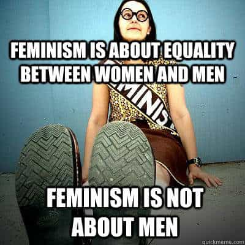

A coloured South African, and student of the ancient near east.


It’s the time of year to ease up on the self-improvement goals and enjoy the company of family and friends. It’s also time to listen their self-indulgent opinions on the various aspects of modern culture. Given our inherent duty to friends and family, it’s time for every red pill individual to endure and navigate a deluge of incoherent liberal rhetoric.
Much like flowers, people…
I have spent the year memetically acquiring their opinions from Facebook, Instagram and everyone’s favorite fake news network. Liberals are, as you know, incandescent with virtues and ready to adroitly burst all over the family “Saturnalia” tree.
I like to think I’m always prepared for progressive arguments, given the remarkable global consistency of their dogma, but I’m not. Anger, the various bourbon induced emotions, and simply not being Thomas Sowell means that I will need some assistance with valid counter arguments.
Keeping in mind the ideological debate is not as advanced in South Africa as it is in the US and Europe, here are the three liberal precepts I expect to, with the aid of your comments, casually but cogently invalidate.
This statement is usually accompanied by tears and screaming. It is repeated with such regularity and intonation that I suspect it’s intended to be didactic rather than considered, reasoned or debated. Feminism is a doctrine prejudiced in favour of specific attributes but paradoxically maintains that it is about equality.

There seems to be a foundational assumption here that validates the teaching and practice of a female (femin) doctrine (ism)—that there was some kind of concerted cross cultural effort on the part of all human males, to subjugate all the females. This belief justifies their demand for a compensatory set of preferential policies. But when exactly did men overpower women to the extent that women require them to concede and democratize their power?
I never get a satisfactory answer to this question. Mostly, I just get a glass of wine thrown in my face along with a peppering of provocative words like chauvinist, misogynist and maninist. From my part, Bertrand Russell, in his History of Western Philosophy (1946) has asserted that it was the institution of private property that brought with it the subjection of women, and the creation of a slave class.
I don’t intend on challenging an essential institution of civilization, or a thinker of Russell’s status, but this assertion seems to provide extraordinarily convenient grounds for restorative justice. Theoretically, a white South African woman could claim to be as “previously disadvantaged” as a black South African man of indigenous ethnicity, and therefore entitled to all the appropriate compensations in order to achieve her equality.
It’s funny how such vaguely defined and overgeneralized statements have very specific economic benefits for adherents to this doctrine.
It’s not surprising that a global culture advocating pagan levels of female worship also dismisses a book that conceives of God as a patriarch. I always expect liberal rhetoric to deny the origins, and consequently, the authority of a book thought to be inspired by divinity and filtered through the personalities of its various authors.
But whatever their issues with myth, faith, historicity or organized religion may be liberals who dismiss the Bible do themselves a great disservice. The King James Version is the bedrock of English literature. It has provided countless people with inspiration (Psalm 104), consolation (Ecclesiastes) and wisdom (Job). Before dismissing it based on a scientific interpretation of Genesis 1 (literally page 1), every liberal should know that an honest cover to cover reading is necessary before tendering an opinion.
So many of them argue their opinions without ever having read the Bible. Most, dogmatically cling to random quotes from apparent polymath, Richard Dawkins’s, The God Delusion (2006). The rest go with Human Sciences 101 facts about earlier Mesopotamian and Egyptian parallels without any concern for further information regarding cultural idiosyncrasies in the Ancient Near Eastern cultural unit.
The big question here is: How do I argue in favour of the value of this book, against people who dismissed it before having read it in its narrative entirety?
Opinions on race, immigration, homosexuality and abortion are derivative of one standard premise – Hate vs. Love. Liberals reduce every idea and behaviour to one of these two emotions. Obviously they are motivated entirely by care bare grade love. Leaving my differing opinion essentially arguing for the value of hate.
Are they just higher beings?
“You hate other racial groups, you hate foreigners, you hate gays, and you hate women”. Their conception of the conservative seems to be a projection and manifestation of their own hatred for a position they are incapable of understanding.
I know there are framing techniques for this situation but they are only useful if liberals responded to reason, allowed you to get the first word in or didn’t rely on in-group consensus.
Their rhetorical method is very easy to understand, it’s just not easy to counter. They oversimplified the history of civilization in regard to feminism, they are blissfully ignorant of the Holy book they dismiss, and they value emotions over intellect on every contentious issue.
The mind is easily blown when you drop all your STEM subjects.
Their thought process doesn’t require them to be correct through reason, logic or facts. That burden is on the shoulders of the conservative. The liberal idea only needs to be trendy, popular and hedonistic to be accepted as a truth. Overgeneralized, ignorant and emotional these precepts authorize every liberal to fulfill their sacred and gender neutral obligation to the universe – the correction of God’s oversights.
Read More:Women Will Never Be Taken Seriously Until They Fight To Be Included In The Draft